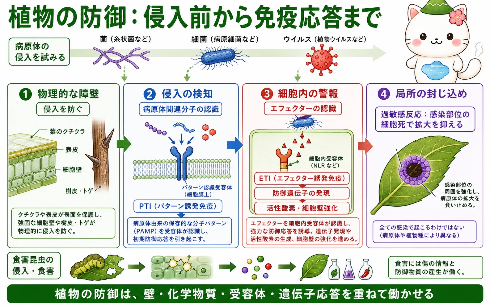
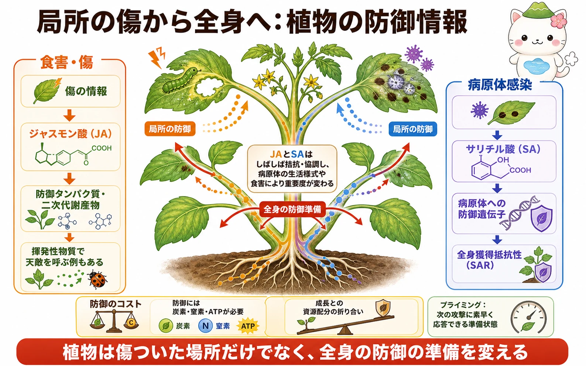

最初の防御は表面の障壁
病原体や食害昆虫に対する最初の防御は、クチクラ、表皮、細胞壁、樹皮、トゲなどの物理的な障壁です。厚いクチクラは水の損失を抑えるだけでなく、微生物が内部へ入りにくい表面をつくります。細胞壁は侵入後にも補強され、病原体の広がりを抑える役割を果たします。
植物はあらかじめ二次代謝産物や抗菌性の物質をもつこともあります。けれども障壁を越える病原体もいるため、植物は細胞膜や細胞内で分子を読み取り、必要な防御を誘導します。
病原体を分子として認識する
細胞膜上のパターン認識受容体は、細菌の鞭毛断片や菌類のキチン断片など、微生物に広く見られる分子パターンを認識します。これをきっかけに起こる初期防御をパターン誘発免疫（PTI）と呼びます。活性酸素の生成、細胞壁の強化、防御遺伝子の発現などが進みます。
病原体の一部は、植物の防御を弱めるエフェクターを細胞内へ送り込みます。植物の細胞内受容体（NLRなど）がエフェクターやその作用を認識すると、より強いエフェクター誘発免疫（ETI）が起こります。PTIとETIは完全に別々の箱ではなく、互いに防御応答を強め合う関係として理解されています。


植物に動物のような抗体はないけれど、細胞の表面と中にたくさんの受容体をもっているよ。入ってきたものの「特徴」を見つけて、防御を始めるんだ。
局所の防御と過敏感反応
感染部位では、細胞壁の補強、抗菌性物質の産生、活性酸素の生成、病原体の栄養を断つ反応などが起こります。ETIが強く働く一部の組み合わせでは、感染部位の周囲の細胞が計画的に死ぬ過敏感反応が見られます。生きた細胞を必要とする病原体の広がりを、局所で止めるための反応です。
ただし、過敏感反応は全ての感染で起こるわけではありません。病原体の種類、植物種、組織、環境によって防御の有効な形は異なります。細胞死も防御の一つの道具であり、植物にとって常に望ましい反応ではありません。
JA・SAと全身の防御準備
食害や傷では、ジャスモン酸（JA）を中心とする情報が重要になり、防御タンパク質や二次代謝産物の産生が高まります。傷ついた葉から出る揮発性物質が、食害昆虫の天敵を呼ぶ例もあります。病原体への防御では、サリチル酸（SA）が局所と離れた組織の防御遺伝子の働きに関わります。
感染や傷の情報は維管束などを通じて離れた葉や根へ届き、次の攻撃にすばやく応答しやすい準備状態をつくることがあります。これをプライミングと呼びます。病原体感染後の全身的な抵抗性は全身獲得抵抗性（SAR）として研究されています。JAとSAはしばしば拮抗的に働きますが、協調する場面もあり、病原体の生活様式や食害によって重要度が変わります。

防御にはコストがある
防御タンパク質や二次代謝産物をつくり、細胞壁を強化し、信号を運ぶには、炭素・窒素・ATPが必要です。その資源は成長、繁殖、貯蔵にも使えるため、植物は防御と成長の間で配分を調整します。防御を常に最大にすればよいとは限りません。
この折り合いは、栄養状態、光、水、年齢、過去の被害、周囲の生物によって変わります。植物防御を理解するときは、「どの物質が効くか」だけでなく、いつ、どこで、どれだけ防御へ資源を回すかを見ることが重要です。
植物は傷ついた場所だけを直して終わりではないよ。ほかの葉や根にも「次に備えて」と知らせるから、全体の資源の使い方まで変わるんだ。
この冊子の要点
- クチクラ、表皮、細胞壁、樹皮、トゲなどは、病原体や食害に対する最初の障壁です。
- 細胞膜の受容体によるPTIと、細胞内受容体によるETIは、相互に強め合う防御の仕組みです。
- 局所では細胞壁強化や抗菌性物質の産生が起こり、条件によっては過敏感反応で感染部位を封じ込めます。
- JA・SAなどの情報は局所と全身の防御をつなぎ、植物は次の攻撃に備えることがあります。
- 防御には資源が必要であり、成長・繁殖との配分の折り合いが重要です。